Home / Past papers / MLP Quiz 2 / this paper
IIT M DIPLOMA AN2 EXAM QDD2 03 Dec 2023 - 03 Dec 2023
Elapsed 00:00
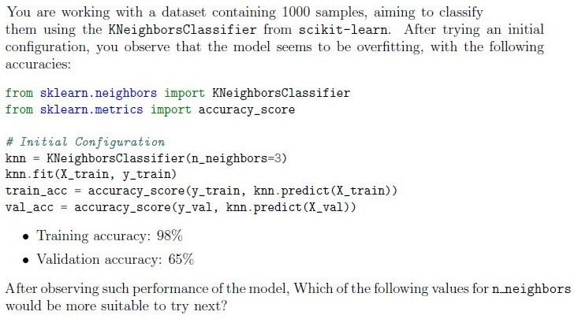
- 1
- 2
- 10
- 500
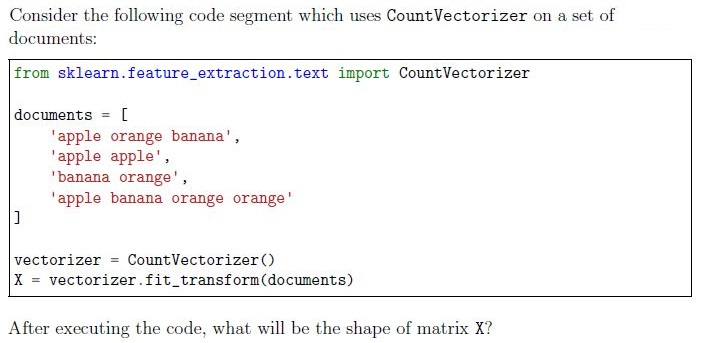
- (4, 3)
- (3, 4)
- (4, 4)
- (3, 3)
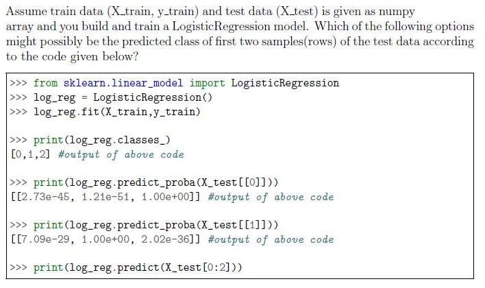
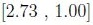
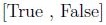
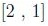
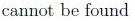
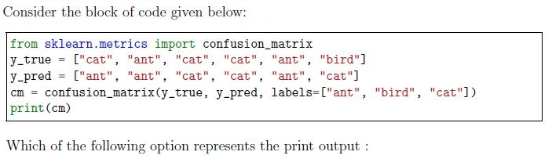
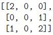
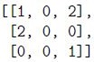
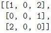
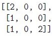
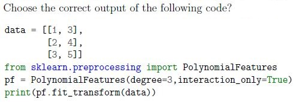
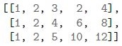
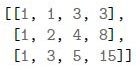
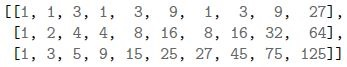
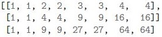
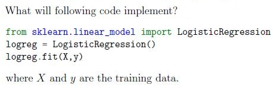
- It will perform regression on the given data.
- It will generate synthetic regression data.
- It will perform classification on the given data.
- It will generate synthetic classification data.
Which method of classification needs more than n classifiers, where n is the number of classes?
- OneVsRestClassifier
- OneVsOneClassifier
- OutputCodeClassifier
- MultiOutputClassifier
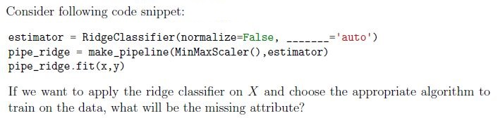
- alpha
- tol
- solver
- learner
- algo
- algorithm
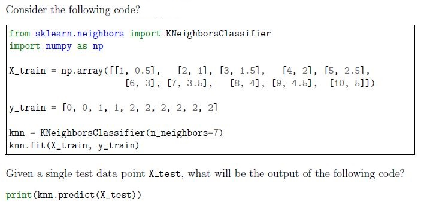
- 0
- 1
- 2
- Can not be determined without knowing the test data point.
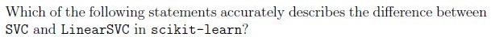
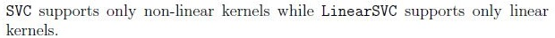
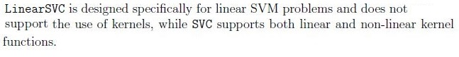
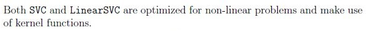
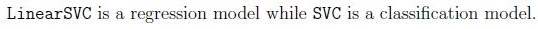

- It applies the perceptron classification with regularization.
- It applies the perceptron classification without regularization.
- It applies the logistic regression with regularization.
- It applies the logistic regression without regularization.
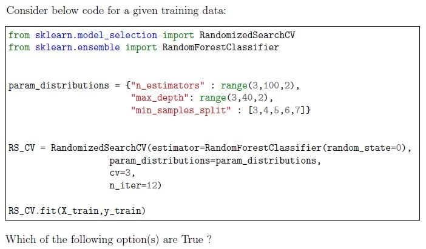
- A total of 12 estimators will be trained, with each estimator using 3-foldcrossvalidation
- The parameter combination will be the same in every run becauserandom_state is set to 0.
- Given code will throw an error because all the parameters are not presentedas a list
- All of the options are incorrect
According to DecisionTreeClassifier parameters which of the following option will have least fitting(underfit) for the same data.


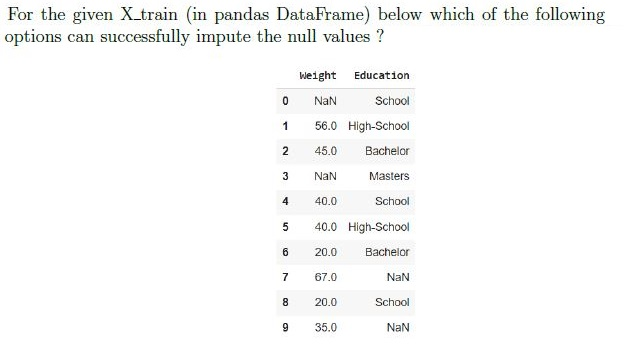
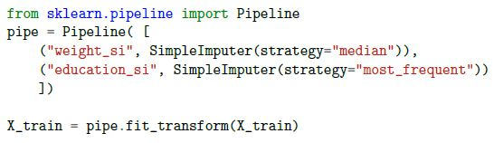
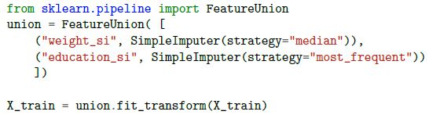
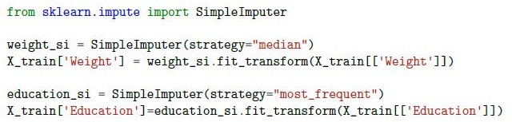
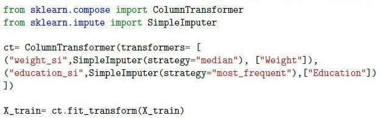
Which of the following is/are true about DummyClassifier?
- DummyClassifier makes predictions that ignore the input features.
- DummyClassifier serves as a simple baseline to compare against other morecomplex classifiers.
- The predictions of DummyClassifier typically depend on values observed in they parameter passed to fit().
- The predictions of DummyClassifier typically depend on values observed in theX parameter passed to fit().
- All of these.
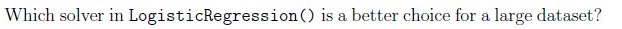
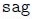
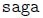
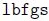
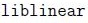
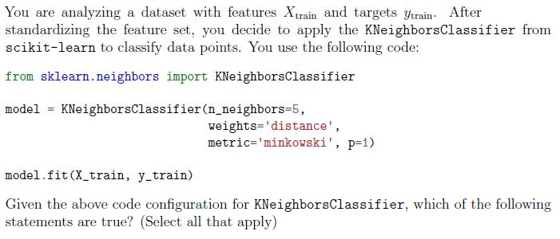
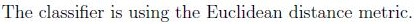
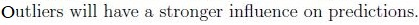
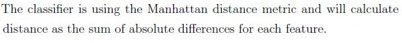
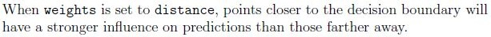
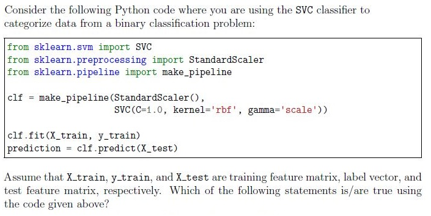
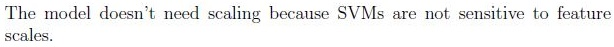
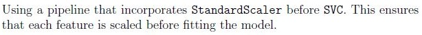
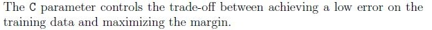
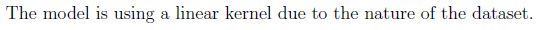
Which of the following are advantages of using ensemble methods in machine learning?
- Improved model performance
- Reduced overfitting
- Faster model training
- Simplicity of model interpretation
Which of the following option(s) are True ?
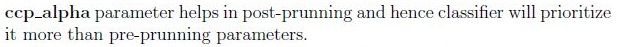
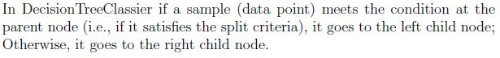
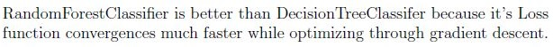
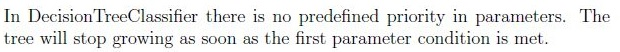
Suppose In a classification problem you want to use BaggingClassifier, which of the following estimator(s) could be used as base estimator in that?


Answer key
- Q1 (MCQ, 1 marks): C
- Q2 (MCQ, 1 marks): A
- Q3 (MCQ, 2 marks): C
- Q4 (MCQ, 2 marks): A
- Q5 (MCQ, 2 marks): B
- Q6 (MCQ, 2 marks): C
- Q7 (MCQ, 2 marks): B
- Q8 (MCQ, 2 marks): C
- Q9 (MCQ, 2 marks): C
- Q10 (MCQ, 2 marks): B
- Q11 (MCQ, 3 marks): D
- Q12 (MCQ, 3 marks): A
- Q13 (MCQ, 4 marks): C
- Q14 (MSQ, 2 marks): C, D
- Q15 (MSQ, 2 marks): A, B, C
- Q16 (MSQ, 2 marks): A, B
- Q17 (MSQ, 2 marks): C, D
- Q18 (MSQ, 2 marks): B, C
- Q19 (MSQ, 2 marks): A, B
- Q20 (MSQ, 3 marks): B, D
- Q21 (MSQ, 3 marks): A, C
- Q22 (SA, 2 marks): 1
- Q23 (SA, 2 marks): 0.5